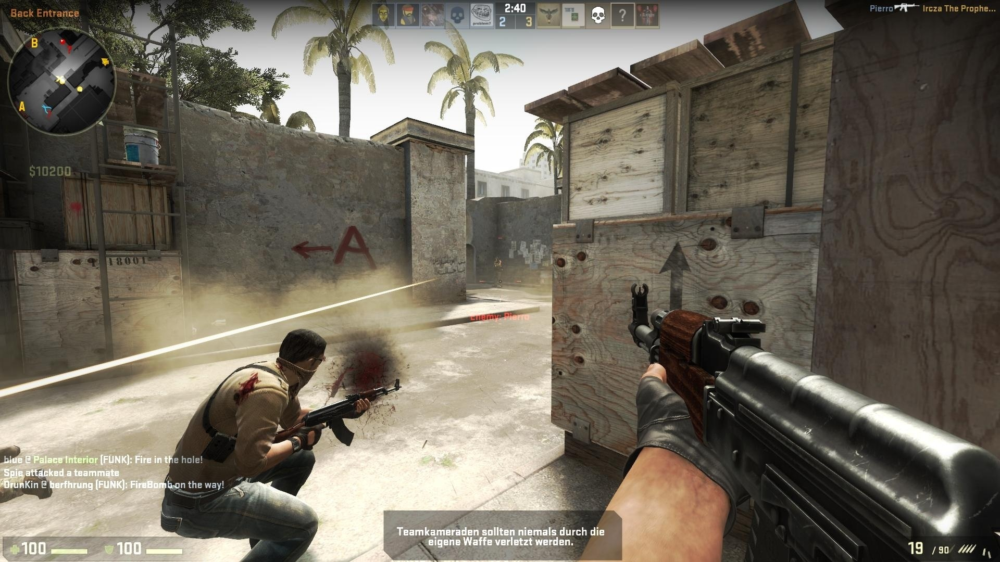

Allgemeine Informationen
Counter-Strike ist ein Computerspiel für den PC aus dem Genre der Online-Taktik-Shooter. Das erstmals am 19. Juni 1999 veröffentlichte Spiel ist eine Modifikation des Ego-Shooters Half-Life und wurde besonders durch LAN-Partys und das Internet bekannt. Counter-Strike wurde von einer von Minh Le („Gooseman“) und Jess Cliffe („cliffe“) geleiteten Gruppe von Hobby-Entwicklern erstellt, deren Mitglieder heute zum Teil für das Unternehmen Valve arbeiten. In dem Spiel geht es um Gefechte zwischen Terroristen und einer Antiterroreinheit, bei denen bestimmte Aufträge erfüllt werden müssen.
Seit der Veröffentlichung von Version 1.0 am 8. November 2000 war Counter-Strike über zehn Jahre lang eines der populärsten und meistgespielten Online-Actionspiele und das meistgespielte Spiel im E-Sport. Aufgrund seiner hohen Bekanntheit wurde das Spiel von den Massenmedien regelmäßig als Beispiel für „Killerspiele“ herangezogen und auch mit Amokläufen wie dem Amoklauf von Erfurt in Verbindung gebracht. Ungewöhnlich ist und war die lang anhaltende hohe Popularität von Counter-Strike, trotz des Alters des Spiels und der am Ende deutlich veralteten Grafikdarstellung. Das ursprüngliche Spiel wurde inzwischen weitgehend durch seine Nachfolger Counter-Strike: Source und Counter-Strike: Global Offensive abgelöst.

Seit der Veröffentlichung von Version 1.0 am 8. November 2000 war Counter-Strike über zehn Jahre lang eines der populärsten und meistgespielten Online-Actionspiele und das meistgespielte Spiel im E-Sport. Aufgrund seiner hohen Bekanntheit wurde das Spiel von den Massenmedien regelmäßig als Beispiel für „Killerspiele“ herangezogen und auch mit Amokläufen wie dem Amoklauf von Erfurt in Verbindung gebracht. Ungewöhnlich ist und war die lang anhaltende hohe Popularität von Counter-Strike, trotz des Alters des Spiels und der am Ende deutlich veralteten Grafikdarstellung. Das ursprüngliche Spiel wurde inzwischen weitgehend durch seine Nachfolger Counter-Strike: Source und Counter-Strike: Global Offensive abgelöst.
Entwicklung
Die Entwicklung von Counter-Strike begann als Freizeitprojekt einer kleinen Gruppe um Minh Le („Gooseman“) und Jess Cliffe. Die erste Beta-Version der Half-Life-Modifikation wurde nach wenigen Wochen Entwicklungszeit am 19. Juni 1999 kostenlos veröffentlicht. Diese enthielt nur das ursprüngliche Geiselrettungs-Szenario, wenige Waffen und vier Level. Danach folgten weitere Beta-Versionen in denen viele Fehler behoben wurden und weitere Waffen und Maps integriert wurden. Mit der Beta 4 wurde das Bombenentschärfungs-Szenario integriert, mit Beta 6 die restlichen zwei Szenarien.